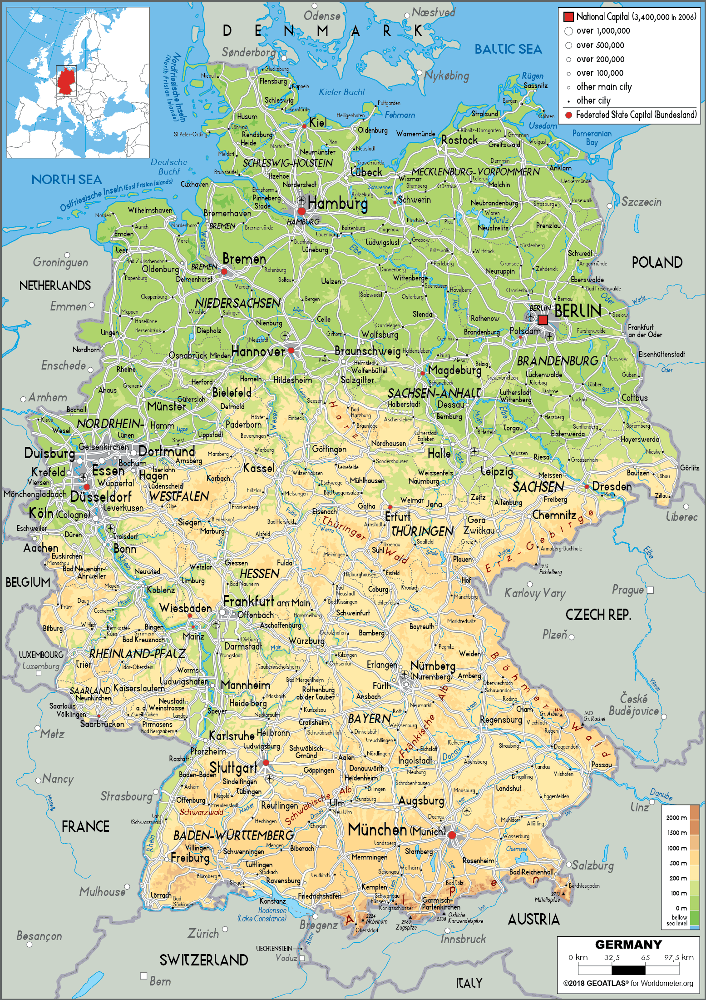

Die Welt zu Gast bei Freunden

Politik & Gesellschaft: Das "Sommermärchen" 2006
Die Fußball-Weltmeisterschaft 2006 markierte einen grundlegenden kulturellen und gesellschaftlichen Wendepunkt im Nachkriegsdeutschland. Zum ersten Mal seit Jahrzehnten präsentierte die Bevölkerung einen entspannten, fröhlichen und weltoffenen Patriotismus.
Das unverkrampfte Zeigen von Schwarz-Rot-Gold ohne nationalistische Ausgrenzung prägte ein völlig neues Selbstverständnis einer modernen, pluralistischen Bundesrepublik.
Unter dem Motto "Die Welt zu Gast bei Freunden" gelang es der Bundesrepublik, veraltete Klischees von kühler Distanz und starrer Bürokratie global abzubauen.
Die Gastfreundschaft, die heitere Stimmung in den Städten und die reibungslose Organisation stärkten die "Soft Power" Deutschlands nachhaltig und prägten das Bild einer sympathischen Kulturnation in Europa.
Die WM 2006 gebar das Phänomen der riesigen Fanmeilen. Millionen von Menschen feierten friedlich gemeinsam auf öffentlichen Plätzen – wie auf der legendären Berliner Fanmeile am Brandenburger Tor.
Dieses kollektive Sommer-Erlebnis festigte ein verbindendes "Wir-Gefühl" quer durch alle sozialen Schichten und Generationen.
20 Jahre später wird das "Sommermärchen" im Geschichtsunterricht differenziert beleuchtet: Neben den positiven Impulsen für Zivilgesellschaft und Infrastruktur stehen auch die späteren Enthüllungen um Vergabeentscheidungen im Fokus.
Es bleibt ein Lehrbeispiel dafür, wie Großsportereignisse politische Stimmungen, nationale Mythenbildung und gesellschaftliche Transformationen beschleunigen können.
2006 fand die WM 16 Jahre nach der deutschen Wiedervereinigung statt. Das Turnier bot die Gelegenheit, Deutschland gemeinsam und selbstbewusst als Gastgeber zu erleben. Schwarz-Rot-Gold wurde vielerorts sichtbar gezeigt und stand für viele Menschen vor allem für Freude, Zusammenhalt und Unterstützung der Nationalmannschaft.
Die WM brachte Menschen aus Ost und West in Fanmeilen, Stadien und vor den Bildschirmen zusammen. Leipzig war als Spielort im Osten Teil des internationalen Turniers; die übrigen Spielorte lagen in den westlichen Bundesländern beziehungsweise in Berlin. So konnte sich das wiedervereinigte Land gemeinsam präsentieren und zugleich zeigen, dass es sich als Gastgeber für Besucher aus aller Welt verstand.
Die WM war kein Beweis dafür, dass alle Unterschiede zwischen Ost und West verschwunden waren. Sie setzte aber ein starkes gemeinschaftliches Zeichen: Ein demokratisches Deutschland konnte offen auftreten, gemeinsam feiern und sich international als modernes, friedliches Land zeigen.